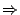

The use of list structures is illustrated by the specification of the Dutch National Flag problem presented below[ in Figure ]CODE:flag: given an arbitrary list of the colours red, white and blue, sort them in the order as they appear in the Dutch National Flag. We want:
{white blue red blue red white red} 
{red red red white white blue blue}
In this specification, the list variables Cs1 and Cs2 permit a succinct formulation of the search for adjacent colours that are in the wrong order.